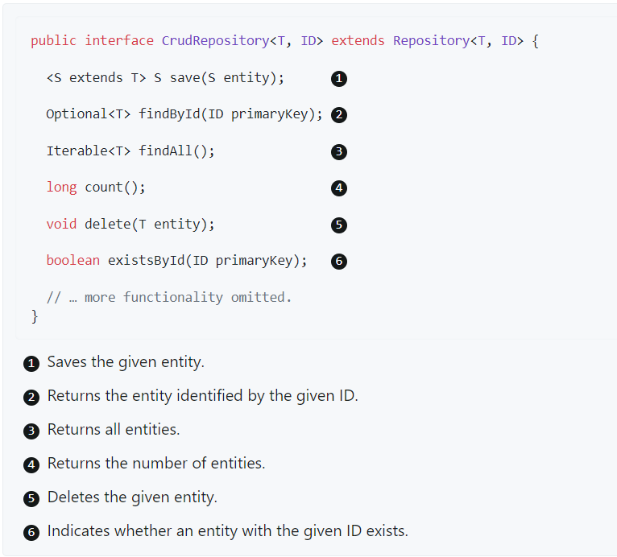
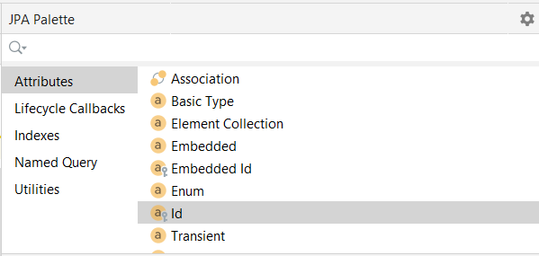
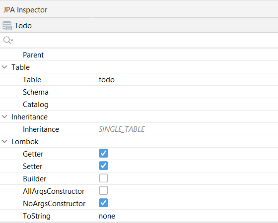

🌱 Introducción a Spring Data JPA
Spring Data JPA es un módulo del ecosistema Spring que facilita enormemente el acceso a bases de datos utilizando JPA (Java Persistence API).
Su objetivo principal es reducir el código repetitivo que tradicionalmente se escribe en la capa de persistencia, permitiendo al desarrollador centrarse en la lógica de la aplicación en lugar de en la gestión manual de consultas y operaciones CRUD.
Con Spring Data JPA:
- Definimos interfaces en lugar de clases para acceder a los datos
- Spring genera automáticamente la implementación en tiempo de ejecución
- Los repositorios se gestionan como beans dentro del ApplicationContext
- Se integran de forma natural con IoC y Inyección de Dependencias
📌 Spring Data JPA no sustituye a JPA ni a Hibernate, sino que se apoya en ellos para simplificar su uso dentro de aplicaciones Spring Boot.
🗄️ Repositories en Spring Data JPA
En Spring, la capa Repository se encarga del acceso a datos.
Spring Data JPA simplifica enormemente esta capa permitiendo trabajar con la base de datos sin escribir código repetitivo.
🧠 ¿Qué es un Repository en Spring?
Un Repository es un bean gestionado por Spring cuya responsabilidad es acceder y manipular datos (normalmente en una base de datos).
En Spring Data JPA, NO implementamos la clase del repositorio, sino que:
👉 Definimos una interfaz, y Spring genera automáticamente la implementación en tiempo de ejecución.
⚙️ ¿Cómo es posible esto?
Spring Data JPA utiliza internamente:
- Reflexión
- Proxies
- El ApplicationContext
para crear una implementación real de nuestra interfaz Repository y registrarla como bean.
🧩 Interfaces base de Spring Data
Spring Data proporciona varias interfaces base que podemos extender.
🟢 Repository
- Es la interfaz raíz
- Normalmente no se usa directamente
🟢 CrudRepository
Proporciona las operaciones CRUD básicas:
save()findById()findAll()delete()count()
public interface UsuarioRepository extends CrudRepository<Usuario, Long> {
}
Las interfaces CrudRepository y ListCrudRepository brindan una funcionalidad CRUD sofisticada para la clase de entidad que se administra.

🟢 JpaRepository ✅ (la más usada)
Extiende CrudRepository y añade funcionalidades específicas de JPA:
- Paginación
- Ordenación
flush()deleteAllInBatch()
public interface UsuarioRepository extends JpaRepository<Usuario, Long> {
}
📌 En proyectos Spring Boot + JPA, lo habitual es usar JpaRepository.
🧱 ¿Qué papel tiene la anotación @Repository?
@Repository es una anotación estereotipo de Spring que indica que la clase pertenece a la capa de persistencia.
Sus funciones principales son:
- 🧩 Identificar semánticamente la capa de datos
- 🔁 Traducir excepciones de JPA/Hibernate a excepciones de Spring
📌 En Spring Data JPA no es obligatorio usar @Repository si la interfaz extiende JpaRepository, ya que Spring Boot la registra automáticamente como bean.
Aun así, usarla mejora la claridad del código.
💮 Definir interfaces de repositorio
Para definir una interfaz de repositorio, primero se debe crear una clase de dominio o entidad. La interfaz debe extender de JpaRepository y el tipo debe ser la clase de dominio y el tipo de ID.
public interface PersonRepository extends JpaRepository<Todo, Long> {
//con esto heredamos todos los métodos definidos en JpaRepository y las clases que se extienden en ella
}
💮 Añadir entidades en IntelliJ
Dentro del paquete domain del proyecto, gracias al plugin que hemos instalado basta con hacer botón derecho sobre el paquete, New --> JPA Entity, y nos creará una entidad.
Para crear los campos de la entidad basta con hacer uso de la paleta de JPA. Para crear el atributo id de clave primaria hacemos doble click y rellenamos los campos.

Al utilizar Lombok nos podemos evitar escribir mucho código boilerplate, ya que el plugin lo hace por nosotros. Para ellos, hacemos click en la palabra Todo de la clase java, se mostrarán una serie de parámetros en la paleta JPA Inspector, hacemos check en las casillas de Getter, Setter y NoArgsConstructor.

Esto añade en la clase de la entidad las siguientes anotaciones: @Getter, @Setter y @NoArgsConstructor.
Lo que implica que genera por nosotros los getters y setters de todos los campos como públicos y el constructor por defecto.
@NoArgsConstructor
@Getter
@Setter
@Entity
@Table(name = "person")
public class Person {
@Id
@GeneratedValue(strategy = GenerationType.IDENTITY)
@Column(name = "id", nullable = false)
private Long id;
@Column(name = "name")
private String name;
@Column(name = "active")
private Boolean active;
}
🔍 Query Methods (consultas por nombre de método)
Una de las grandes ventajas de Spring Data es que permite crear consultas solo con el nombre del método.
El análisis de nombres de queries de consulta se divide en sujeto y predicado.
- La primera parte (
find…By,exists…By) define el sujeto de la consulta, - La segunda parte forma el predicado. La cláusula introductoria (sujeto) puede contener más expresiones.
Spring interpreta el nombre del método y genera automáticamente la consulta correspondiente.
📌 Esto evita escribir JPQL o SQL en muchos casos.
🧠 Cómo parsea Spring Data un query method
Spring Data divide el nombre así
find [Distinct] [Subject] By [Predicado]
Donde:
- find → tipo de operación
- Distinct → modificador (opcional)
- Subject → nombre “humano” (opcional, decorativo)
- By → separador
- Predicado → condiciones (LastnameOrFirstname, etc.)
👉 El subject puede estar o no, y no cambia la consulta.
Además de
find…By…puedes usar otros prefijos equivalentes a find:read…By…,get…By…,query…By…,search…By…
Ejemplos válidos:
findByLastname(...)
findDistinctByLastname(...)
findPersonByLastname(...) //este tiene sujeto Person
findDistinctPersonByLastname(...)
findPeopleByLastname(...) //este tiene sujeto People
findPeopleDistinctByLastname(...)
Ejemplos de Query Methods:
public interface PersonRepository extends JpaRepository<Person, Long> {
//Strings
List<Person> findByFirstnameStartingWith(String prefix); // LIKE 'prefix%'
List<Person> findByLastnameEndingWith(String suffix); // LIKE '%suffix'
List<Person> findByEmailContainingIgnoreCase(String part); // LIKE '%part%' ignoring case
List<Person> findByLastnameNotLike(String pattern); // NOT LIKE
//Números y comparaciones
List<Person> findByAgeGreaterThan(int age);
List<Person> findByAgeGreaterThanEqual(int age);
List<Person> findByAgeLessThan(int age);
List<Person> findByAgeBetween(int min, int max);
List<Person> findBySalaryBetween(BigDecimal min, BigDecimal max);
//Boolean
List<Person> findByActiveTrue();
List<Person> findByActiveFalse();
//Null
List<Person> findByEmailIsNull();
List<Person> findByEmailIsNotNull();
//Fechas y tiempo
List<Person> findByBirthDateAfter(LocalDate date);
List<Person> findByBirthDateBefore(LocalDate date);
List<Person> findByCreatedAtBetween(LocalDateTime start, LocalDateTime end);
List<Person> findByUpdatedAtAfterOrderByUpdatedAtDesc(LocalDateTime date);
//IN / NOT IN (colecciones)
List<Person> findByCityIn(List<String> cities);
List<Person> findByLastnameIn(Collection<String> lastnames);
List<Person> findByAgeNotIn(Collection<Integer> ages);
//Combinaciones con AND / OR
List<Person> findByLastnameAndFirstname(String lastname, String firstname);
List<Person> findByLastnameOrCity(String lastname, String city);
// Ojo: AND suele tener prioridad sobre OR en el parsing, mejor no hacer nombres demasiado complejos.
List<Person> findByLastnameAndActiveTrueOrCity(String lastname, String city);
//Relaciones (navegando propiedades)
//Si Person tiene una relación, con Address address con String country, o Company company con String name:
List<Person> findByCompanyName(String companyName); // person.company.name
List<Person> findByAddressCountryIgnoreCase(String country); //person.address.country
List<Person> findByCompanyNameAndActiveTrue(String companyName); //person.company.name
//Si Person tiene una colección, por ejemplo Set<Role> roles donde Role tiene name:
List<Person> findByRolesName(String roleName); // join implícito
//Exists / Count
boolean existsByEmail(String email);
boolean existsByLastnameAndFirstname(String lastname, String firstname);
long countByActiveTrue();
long countByCity(String city);
//Top / First + OrderBy (limitando resultados)
Person findFirstByOrderByBirthDateAsc(); // la más “vieja” (nacimiento más antiguo)
List<Person> findTop3ByOrderByCreatedAtDesc(); // últimas 3 personas creadas
Person findTopByLastnameOrderByBirthDateDesc(String lastname); // la más joven con ese apellido
//Paginación y ordenación dinámica
List<Person> findByLastname(String lastname, Sort sort);
Page<Person> findByActiveTrue(Pageable pageable);
Page<Person> findByLastnameContainingIgnoreCase(String lastname, Pageable pageable);
//Negaciones
List<Person> findByLastnameNot(String lastname);
List<Person> findByCityNotIgnoreCase(String city);
// Enabling ignoring case for an individual property
List<Person> findByLastnameIgnoreCase(String lastname);
// Enabling ignoring case for all suitable properties
List<Person> findByLastnameAndFirstnameAllIgnoreCase(String lastname, String firstname);
//comprobar existencia
boolean existsByEmail(String email);
boolean existsByLastnameAndFirstname(String lastname, String firstname);
//borrar
void deleteByEmail(String email);
long deleteByActiveFalse(); // devuelve cuántos borró (según versión/uso)
void removeByCity(String city); // sinónimo de delete
}
En la documentación oficial de Spring Data JPA encontramos la siguientes tablas con las palabras clave admitidas:
🧠 Relación con IoC y DI
- Los Repositories son beans
- El ApplicationContext los crea y gestiona
- Se inyectan automáticamente en servicios
Ejemplo:
@Service
public class UsuarioService {
private final UsuarioRepository usuarioRepository;
public UsuarioService(UsuarioRepository usuarioRepository) {
this.usuarioRepository = usuarioRepository;
}
}
👉 El programador no crea el repositorio, Spring lo inyecta.
🧪 Consultas personalizadas con @Query
❓ Cuando necesitas realizar operaciones más complejas o específicas que no se cubren automáticamente, podemos definirla manualmente:
@Query("SELECT u FROM Usuario u WHERE u.edad > :edad")
List<Usuario> buscarMayoresDe(@Param("edad") int edad);
@Query("select u from User u where u.email = ?1 and u.active = ?2")
List<User> findUsers(String email, boolean active);
Cuando usas @Query en Spring Data JPA, el lenguaje por defecto es, JPQL.
También es posible usar SQL nativo si es necesario, agregando una propiedad dentro de @Query:
@Query(
value = "SELECT * FROM users u WHERE u.active = 1",
nativeQuery = true
)
List<User> findActiveUsers();
Actualizaciones y eliminaciones personalizadas: Puedes usar @Query para definir consultas de actualización o eliminación personalizadas.
@Modifying //Indica que la consulta modificará el estado de la base de datos.
@Transactional //Indica que la transacción debe estar activa para ejecutar esta consulta.
@Query("UPDATE Todo t SET t.title = :nuevoTitulo WHERE t.id = :todoId")
int updateTitleById(Long todoId, String nuevoTitulo);
Proyeccciones a DTO: Puedes especificar cómo se deben mapear los resultados de la consulta a objetos Java específicos como DTOs.
@Query("SELECT new es.severo.ud4.dto.TodoDto(t.id, t.title) FROM Todo t WHERE t.completed = false")
List<TodoDTO> encontrarTodosNoCompletados();